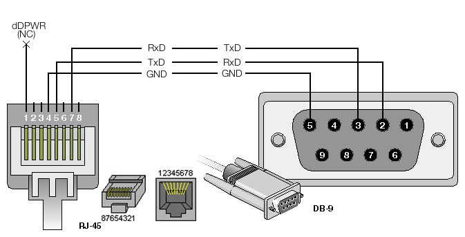
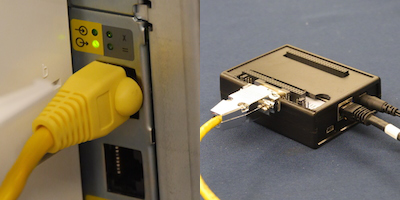
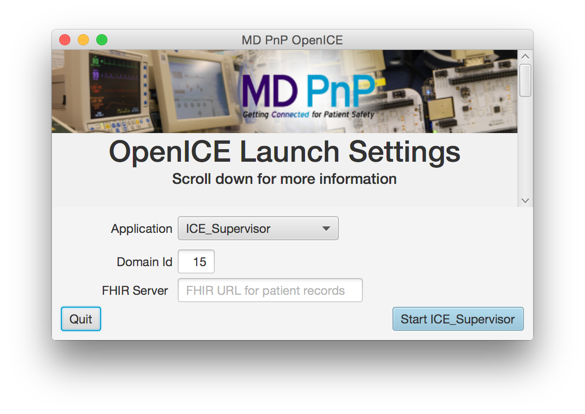
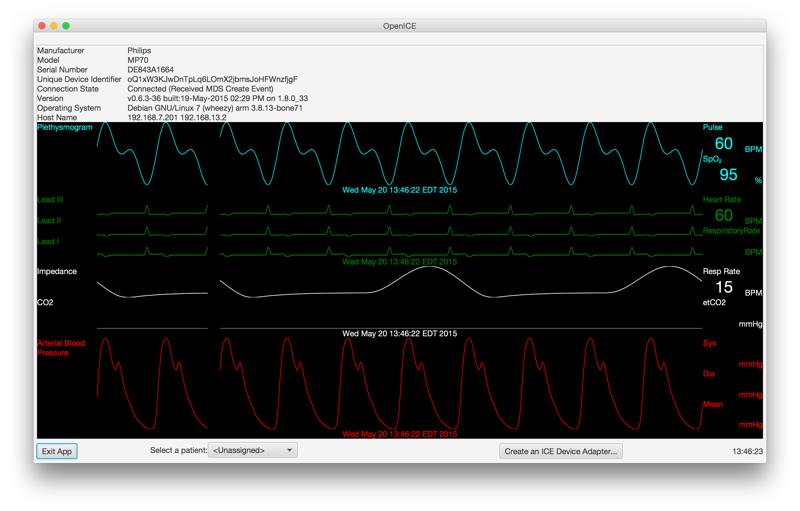

Device-Adapter Configuration Example
Required Hardware
- Philips MP70
- The device adapter software was developed using a MP70 rev.J. Software revisions G through K are expected to be compatible with the OpenICE device adapter software but this has not been tested.
- OpenICE Beaglebone
- This is your newly imaged Beaglebone Black as configured in previous section. The MD PnP Beaglebone image contains the software necessary to run the OpenICE device adapter we will configure to communicate with the MP70.
- RS232 Cape
- To connect the Beaglebone and the MP70, we will use a Beaglebone Black serial cape and a special cable described below.
- RJ45 to DB-9
- To connect the RJ45 port on the MP70 (labeled as either RS232, MIB or an arrow pointing out from a circle) to the DB-9 port on the RS232 cape, a custom RJ45 to DB-9 cable is needed. A simple solder-less solution is to purchase a "DB-9 to RJ45 modular adapter". The image below shows the appropriate pinout for the cable. Feel free to change the gender of the DB9 connector to fit the client computer you are connecting to.

- Computer w/ OpenICE
- A computer running the MD PnP OpenICE demo application. This will allow us to view the MP70 data in the OpenICE network. The software can be downloaded from GitHub. This is the same MD PnP OpenICE application included on the Beaglebone disk image as described above.
- A Network
- You will need a network to connect the devices to that is capable of DHCP. A standard home WiFi router is sufficient.
- Monitor and Keyboard
- You will need a means of configuring the Beaglebone software. The most obvious means of accomplishing this is a monitor with HDMI connection to the BBB and a keyboard. It is advised to setup SSH for using the device adapter.
Connect the Devices

- Attach the RS232 serial cape to the Beaglebone expansion headers. Ensure the serial cape is configured correctly - the jumpers should be set to UART1.
- Plug the RJ45 - DB-9 cable into the Beaglebone.
- Plug the RJ45 - DB-9 cable into the MP70. There are multiple RJ45 ports - plug into one where the light is on next to a circle with an arrow coming OUT of the circle as shown in the picture.
- Turn both devices on.
Setup a Network
Now, connect the device adapter and your computer to the same DHCP-capable network. For this example, a standard home WiFi router is used.
- Connect your computer to the network via WiFi or Ethernet cable.
- Use an Ethernet cable to connect the BBB to the router.
- To test if the network is configured on the BBB, type ifconfig in the BBB terminal and ensure the output shows an assigned IP addressed.
NOTE: You will need to ensure your BBB has a means of establishing time. Either set the time manually or connect your network to the internet for NTP communication.
With our system connected, we finally need to specify what type of medical device is connected to the Beaglebone device adapter. This is specified in the configuration file of the device adapter application on the Beaglebone. The device configuration file is called "device.this" and is located in the home directory of the default debian user. All terminal entries are relative to the default home directory.
- To configure the Beaglebone to function as a device adapter for the MP70, in the terminal enter:
echo -domain 15 -device IntellivueSerial -address ttyO1 > device.this (Note: Letter O not number 0)
This entry will write "-domain 15 -device IntellivueSerial -address ttyO1" to the file "device.this". "-domain 15 -device IntellivueSerial -address ttyO1" indicates that the device adapter is for a Philips Intellivue device, using the serial version of the driver, communicating over BBB serial port interface ttyO1, and that device adapter will publish to OpenICE DDS domain 15.
- Restart the Beaglebone. The device adapter software will automatically start.
If you are trying to connect to a device that is not a MP70, the previous steps will be different.
- To display a list of available options for different device adapters and simulators, enter:
OpenICE-1.0.0/bin/OpenICE —-help
- If you wanted to start a simulated electrocardiogram monitor on domain 5, for example, the entry in "device.this" would have "ECG_Simulator" as the device name preceded by "5". The BBB terminal input would be:
echo -domain 5 -device ECG_Simulator > device.this
View the Data
Use the MD PnP OpenICE demo app to view the MP70 data.
On your computer:
- Open the OpenICE Demo Application you download from GitHub.
- Start an ICE_Supervisor on Domain 15.

- Once the device has finished negotiating, click on the MP70 icon to view the waveform and numeric data in the OpenICE network. You have now integrated an MP70 into the OpenICE!

Troubleshooting
If you experience issues with the device adapter setup, please try the following:
- Restart the OpenICE software on your computer
- Restart OpenICE device-adapter service on the Beaglebone with:
- sudo service device-adapter stop
- sudo service device-adapter start
- If you change networks while using the OpenICE, please restart the OpenICE after you have connected to the desired network.
- Ensure that you spelled the contents of device.this correctly, e.g. "-domain 15 -device IntellivueSerial -address ttyO1".
- In the OpenICE on your computer, if you see numeric vital signs but no waveforms, check the time on the BBB and ensure that NTP is running syncing.
- If your BBB is not syncing the time properly, ensure the network you're using has internet access in order to communicate with NTP server.